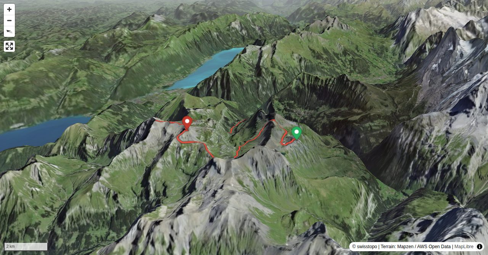

This long tour across three summits requires some stamina, especially on the descent, and some skills in rock and scree. Hikers who normally prefer more pleasurable tours should not be put off by the size of the entire tour. Each summit is a very rewarding destination in its own right.
Col in the first part of the tour from Birg to Chilchfluepass.
Quick Facts
| Summit elevation | 2776 m |
|---|---|
| Difficulty | SAC T4 Alpine hiking with exposure, rougher terrain, and sections that are not suitable for beginners. Guide |
| Trailhead | Birg (Schilthornbahn) |
| Region | Berner Oberland |
| Canton | Bern |
| Distance | 19.8 km (out-and-back) |
| Total ascent | ~853 m |
| Elevation range | 1488-2776 m |
| Route sources | SAC Route Portal |
Photos


Planning
i
i
sac_scale (precise T1–T6) with
swissTLM3D Wanderwegart
fallback where OSM is silent (coarser T2/T3 and T4+ buckets).
Coverage: OSM 47.3% · swisstopo 28.1% · unknown 23.0%.Elevations computed from the inlined GPX track (SwissTopo height API).
Loading forecast…
Start: Birg (Schilthornbahn) (2669 m)
End: Grütschalp (1486 m)
3D Terrain View

Route Details
Traverse Drättehorn – Hoganthorn – Schwalmere
Terrain & safety
It is a long tour with a many metres of vertical height to negotiate, but without greater difficulties. There are some passages on scree which require sure-footedness. Easy scrambling is needed on Drättehorn and Hoganthorn (I). On the north-west side of Bietenlücke you will encounter snowfields until late into the summer.
Source: SAC Route Portal
Field Reference
| Trailhead | Birg (Schilthornbahn) | 46.56210, 7.85750 |
|---|---|---|
| Summit | Draettehorn (2776 m) | 46.58239, 7.82383 |
Coordinates are WGS84 decimal degrees (lat, lon). Emergency: 112 (general) or 1414 (Rega air rescue). Page URL: